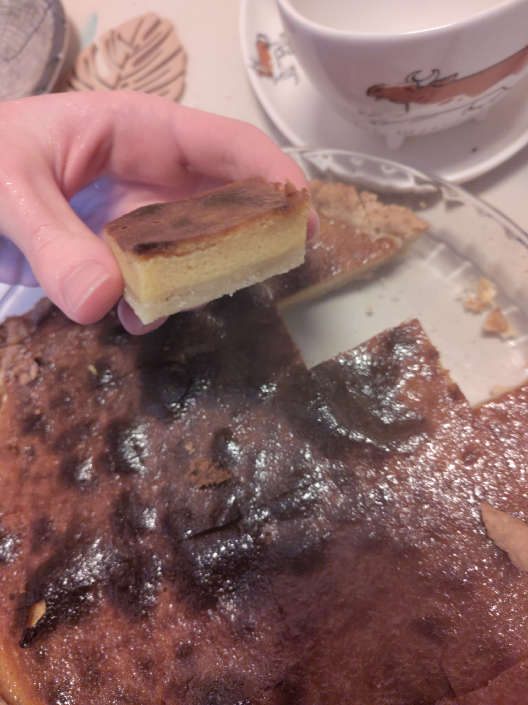

These are the things I'm interested at
Most of the stuff I enjoy doing I like to do it as a hobby I enjoy making, so for instance I like baking stuff that I will eat and enjoy very much, I like to learn other languages and also I started to enjoy very much from creating websites
Baking stuff
It started as a necessity to create a bread that I can enjoy fresh, as it was customary for me back in Brazil we would go to the baker shop in the morning and have fresh bread for us to eat, and since here in here it is not so common to have bakeries that open early here in Finland. But now it is something I see as a hobby I enjoy very much to make great tasting bread for me and some for those around me. But also I bake any other thing I feel a craving for.
Here are some of the photos of stuff I've baked:

a pizza made à la brasileira!

some pretzels I made for fun!
those were a sesame seeds and a bread with black olives!
here were some brownies!
a pumpkin pie I loved to learn to bake!
Learning languages
I mostly do it as something on the side, considering I have to concentrate on my studies, I leave it for my spare time, nonetheless it is just something that wonders me some languages, how they sound and just trying to understand what are people talking about, or even learn what the culture of that language even is like by the way that structures are made. Recently the languages I've been trying to learn are Finnish, Mandarin and Spanish.
Website creation
Surprisingly, just doing this assignment was what made me actually enjoy this, it is so nice just to build something and seeing it work, even though it doesn't make wonders, just seeing it work is what is making me drive head on to this assignment. I plan on making other websites, but those will only be personal passion projects.